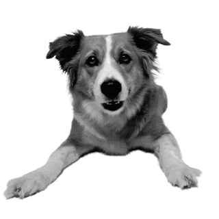

|  |
Golden Retriever VS Labrador Retriever |
|||||||||
| Golden Retriever | Inggris | 25-34 kg | 21,5-24 inci | Ekor Lebat | Anti air, panjang, berbulu, dan lusuh | Cukup mudah | Sangat mahal | Mudah dilatih | Butuh banyak perwatan | Dapat melahirkan 6-10 anak anjing |
| Labrador Retriever | Kanada | 25-36 kg | 20,5-25 inci | Ekor Kuat dan Lebar | Pendek, padat, terjalin, tahan air | Mudah | Cukup mahal | Sulit dilatih | Sedikit perawatan | Dapat melahirkan 6-8 anak anjing |